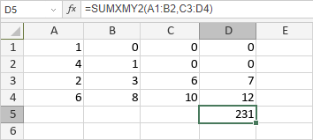

SUMXMY2 Funkcija
SUMXMY2 funkcija je jedna od funkcija za matematiku i trigonometriju. Koristi se za vraćanje zbira kvadrata razlika između odgovarajućih elemenata u nizovima.
Sintaksa
SUMXMY2(array_x, array_y)
SUMXMY2 funkcija ima sledeće argumente:
| Argument | Opis |
|---|---|
| array_x | Prvi opseg ćelija. |
| array_y | Drugi opseg ćelija sa istim brojem kolona i redova kao array_x. |
Napomene
Kako primeniti SUMXMY2 funkciju.
Primeri
Slika ispod prikazuje rezultat koji vraća SUMXMY2 funkcija.
